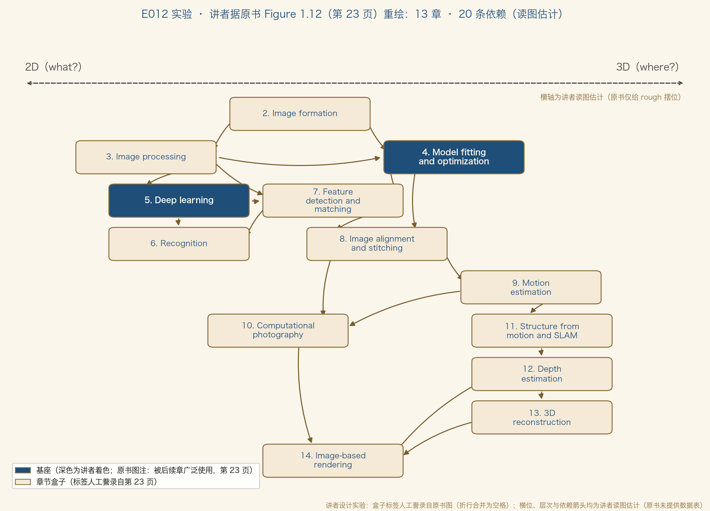

正课 · 04 · 第 1 章 绪论
本书地图与学习法
从依赖图到符号约定 · 第 1 章收官
四段：① 一张依赖图，两个基座 ② 十三章逐个点名 ③ 课表、工具与延伸阅读 ④ 符号约定 + 第 1 部复盘
导览 · BOOK OVERVIEW
这本书，可以跳着读
松耦合
有些章节只松散耦合，不必顺序通读几何与三维重建，无须先啃反射与着色（原书第 22 页）
讲者按
地图的意义：不是规定路线，是让你敢跳本条为讲者归纳，非原书内容
地图 · FIGURE 1.12
十三章，一张依赖图

据原书 Figure 1.12（第 23 页）重绘 · 横位与箭头为讲者读图估计 · 深色盒为讲者着色 · 代码实跑输出
地图 · WHAT & WHERE
横轴：2D 管「是什么」，3D 管「在哪里」
2D（what?）
偏图像一侧：图像处理、深度学习、识别讲者读图（据第 23 页）
3D（where?）
偏几何一侧：运动估计、SfM 与 SLAM、深度、3D 重建讲者读图（据第 23 页）
中间带：成像 · 模型拟合 · 特征 · 对齐 · 计算摄影 · 渲染（讲者读图，据第 23 页）
what–where 借自人类视觉双通路（Goodale and Milner 1992）——原书图注自己补了一句：不应太当真（第 23 页）
地图 · FOUNDATIONS
两个基座，三大模块
4 · 模型拟合与优化
正则化与 MRF 的源头；经典正则化在移动 AR 等时效敏感应用仍常是首选（第 26 页）
5 · 深度学习
第二版全新章节：监督学习 → 前馈网络 → 卷积 → 生成网络（第 26 页）
原书图注：基础技术被后续章广泛使用（第 23 页）——讲者归纳（按内容分，与上页横轴分法是两套视角）：① 基座 Ch4–5 ② 2D 主线 Ch3、7、8、10 ③ 3D 主线 Ch9、11–13；出口 Ch6、Ch14，入口 Ch2（读图第 23 页）
变化 · CH6 MOVES UP
识别章，为什么搬家了
第一版
排在全书最后它依赖分割与特征匹配等中间表示（第 26 页）
第二版
提前到第 6 章深度网络能直接学出中间表示；识别已成研究重心，作者把它提前让学生早接触（第 26 页）
讲者按：地图随范式重画——上一集的时间线刚演示过一次，这里是第二回
巡览 · CH2–3
逐章点名（一）：成像与图像处理
2 · 图像形成
几何投影、光度与光学、传感器，三组件拆解（第 24 页）
3 · 图像处理
滤波、傅里叶、金字塔与小波、几何扭曲（第 24 页）
巡览 · CH4–6
逐章点名（二）：基座与识别
4 · 模型拟合与优化
变分与正则化 + MRF，顺路引出贝叶斯推断（第 26 页）
5 · 深度学习
从经典监督学习、卷积网络，到 3D、时序与生成网络（第 26 页）
6 · 识别
实例识别 → 分类 → 检测 → 语义/全景分割 → 视频理解 → 图文问答（§6.1–6.6，第 26 页）
巡览 · CH7–10
逐章点名（三）：从特征到计算摄影
7 · 特征检测与匹配
第 8、11 章和实例识别的地基据第 27 页正文；图中无直连箭头（讲者读图）
8 · 对齐与拼接
特征配准 + 全景拼接，期中项目好题材（第 27 页）
9 · 运动估计
平移 → 参数 → 样条 → 逐像素光流，分层与学习模型收尾（第 27–28 页）
10 · 计算摄影
HDR、超分、编辑合成、纹理修补与风格迁移（第 28 页）
巡览 · CH11–14
逐章点名（四）：三维与渲染
11 · SfM 与 SLAM
两帧 → 多帧 → SLAM，直通 AR 与自主导航（第 28 页）
12 · 深度估计
立体 = 已知相机的运动估计；另有单目深度推断（第 28–29 页）
13 · 3D 重建
shape-from-X、主动测距、建筑/人脸/人体，加外观建模（第 29 页）
14 · 基于图像的渲染
视图插值、光场、视频纹理，收官于神经渲染（第 29 页）
附录 A 线代与数值、B 贝叶斯估计、C 补充材料——数学与数据集的补给站（第 29 页）
学习法 · EXERCISES
习题三类，攒一座自己的库
三类习题
书面作业 / 一周小项目 / 开放研究题——可拿来做期末项目（第 22–24 页）
个人视觉库
自己实现并验证，长期胜过调用不理解的黑盒（第 24 页）
讲者按：本课每集的「亲手做实验」走的就是这条路
学习法 · TOOLCHAIN
Python + NumPy + OpenCV
地基
数组/张量记号 + 线性代数，直通 PyTorch推荐前提：对编程语言无强烈偏好（第 24 页）
Jupyter
教程、示例、待补代码放一处；Colab 可云端跑笔记与训练（第 24 页脚注 10）
讲者按：本课实验仅依赖 Matplotlib 与系统中文字体，脚本可复现
学习法 · SYLLABUS
一学期装不下，挑着教
Table 1.1
13 周样例课表：第 1 周合讲 Ch1–2，Ch4–5 占第 3–4 周，其余约一周一章（第 30 页）
拆成两门
斯坦福 CS231A/231N、伯克利、密歇根都这么办（第 30 页脚注 11）
作者与 Seitz 的十周课：本科轻数学重复习，研究生深挖技术（第 30 页）——讲者按：挑内容不丢覆盖，跳读地图在此派上用场
讲者对照 · OUR MAP
本课课表，与作者大纲同构
作者 13 周
第 1 周合讲 Ch1–2，Ch4–5 占第 3–4 周（Ch5 独占一周），其余约一周一章（第 30 页）
本课
数学工具箱 8 集（E001–E008）→ 第 1 部 4 集（E009–E012）→ 正篇逐章
同构点
都是先打基础、再进专题：原书 Week 1–4 是 Ch1–2 → Ch3 → Ch4–5讲者归纳（对照第 30 页）
工具 · NOTATION
全书符号，讲者归纳五条
向量 v 小写粗体 · 矩阵 M 大写粗体 · 标量斜体；列向量默认右乘 Mv（第 31 页）
常用矩阵：R 旋转 · K 标定 · I 单位阵（第 31 页）
齐次坐标加波浪号 x̃；叉积矩阵 [ ]×（第 31 页）
原书吐槽：各教材记号「五花八门」（原文俚语 all over the map）——讲者按：下一集起照这套写
延伸 · FURTHER READING
想读更深，书单在这
数学
矩阵代数 Golub & Van Loan；线代 Strang（第 32 页）
机器学习
Bishop 2006（原书评：wonderful）、Murphy 2012；深度学习入门 Glassner 2018（第 32 页）
视觉
Hartley & Zisserman、Forsyth & Ponce 等，可作他山之石（第 32 页）
原书自称 self-contained，但预设线代、数值与图像处理基础（第 31–32 页）
讲者归纳 · PART 1 RECAP
第 1 章，四集走完
E009
视觉是逆问题（§1.1 概念，第 3–5 页 · E009）
E010
19 个应用，从问题倒推技术（§1.1 清单，第 5–9 页 · E010）
E011
五十年历史与时间线（§1.2 · E011）
E012
依赖图、课表与符号（§1.3–1.6，第 22–32 页 · 本集）
数学工具箱八集（E001–E008）已在前就位，正篇自第 2 章开始——讲者按：第 1 部完结
实验 · REDRAW FIG 1.12
把依赖图变成可验证的图
誊录
13 个盒子标签人工誊录自第 23 页（图内折行合并为空格）
断言 15 项
编号 2–14 各一次 · 无环可拓扑排序 · 唯一起点=第 2 章 · 终点={6, 14} · 基座各有出边 · 横位 2D 侧<中间带<3D 侧等
横位与箭头为讲者读图估计——原书未提供坐标与边表（图注已标）
实验结果 · OUTPUT
依赖图，实跑验证
据原书 Figure 1.12（第 23 页）重绘 · 箭头为讲者读图估计 · 深色盒为讲者着色 · 断言 15/15 全过
NEXT · 进正题
读原书§1.3–1.6（原书第 22–32 页），对照 Figure 1.12（第 23 页）读
作业在依赖图上画出你自己的学习路径：先 2D 侧还是先 3D 侧？给出依赖依据
下一集E013 三维世界如何压进二维平面：点、线、面与投影（§2.1）